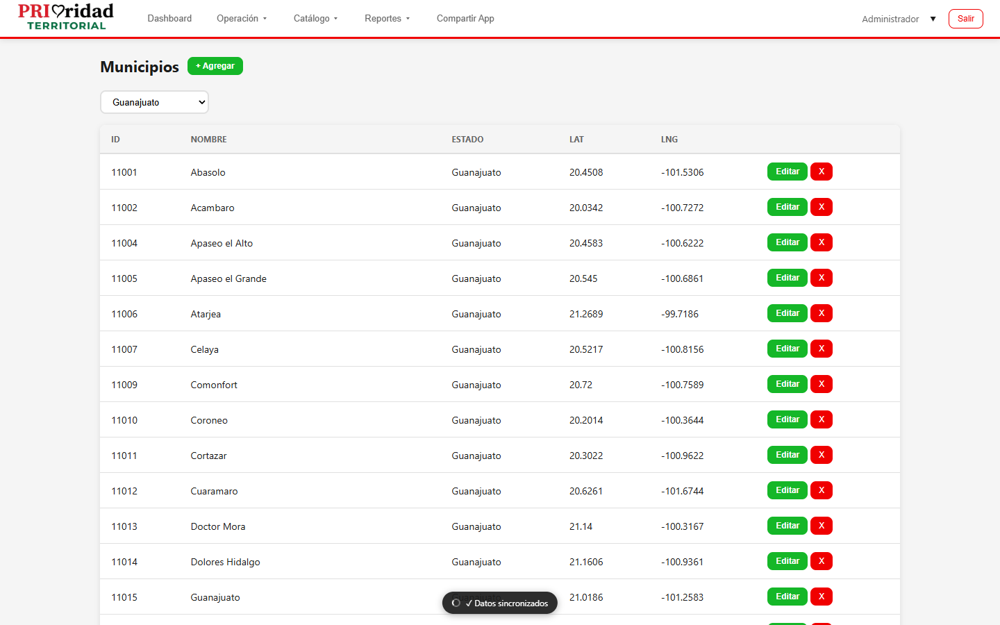
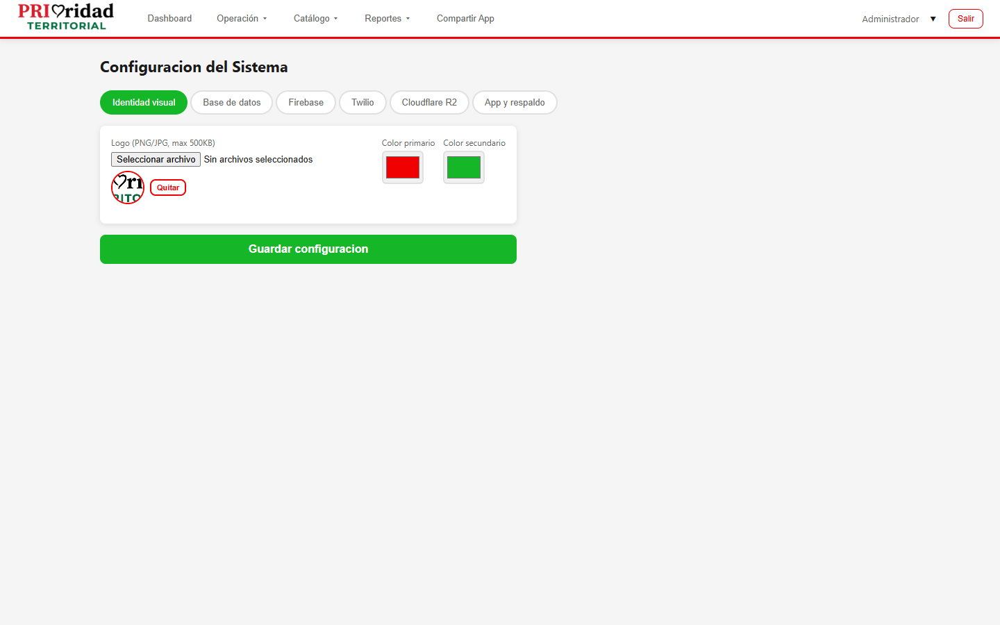

PRIoridad Territorial
Manual del Administrador
Control total del sistema - Gestión de usuarios, catálogos, reportes y configuración
Versión 1.0 | Agosto 2026
Contenido
Administrador El rol de Administrador tiene acceso completo a todas las funcionalidades del sistema.
1. Vista General del Dashboard
Al iniciar sesión, el dashboard muestra un resumen completo de la operación:
- Mapa interactivo - Ubicación de enlaces en tiempo real, geocercas y rutas
- Estadísticas generales - Total de ciudadanos, encuestas completadas, rutas activas
- Filtros - Por municipio, sección, fecha, tipo de acción
- Checkbox "Ver ubicación de enlaces" - Activa/desactiva la visualización en mapa de los enlaces de campo

2. Gestión de Usuarios
Acceso: Menú usuario → Usuarios
2.1 Ver lista de usuarios

2.2 Crear nuevo usuario
- Nombre - Nombre completo del usuario
- Email - Correo electrónico (será usado para iniciar sesión)
- Nombre de usuario - Alias para login (opcional)
- Contraseña - Contraseña inicial
- Rol - Selecciona: Administrador, Coordinador, Enlace, Capturista, Seccional o Representante
- Municipio - Municipio asignado
- Sección - Sección electoral (para enlaces y capturistas)
- Teléfono - Número de contacto
2.3 Editar usuario
2.4 Desactivar/Eliminar usuario
3. Gestión de Catálogos
Acceso: Menú Catálogo
El menú de catálogos permite administrar todas las entidades base del sistema:
| Catálogo | Función |
|---|---|
| Estados | Administrar estados de la república |
| Municipios | Gestionar municipios por estado |
| Secciones | Secciones electorales por municipio |
| Casillas | Casillas de votación por sección |
| Partidos | Partidos políticos registrados |
| Discapacidades | Tipos de discapacidad para registro |
| Ocupaciones | Catálogo de ocupaciones |
| Estatus de Visita | Resultados posibles de una visita (atendido, no abierto, rechazado, etc.) |
3.1 Agregar elemento a un catálogo

4. Campañas y Filtros
Acceso: Menú Campañas o Filtros Campañas
4.1 Crear una campaña
4.2 Filtros de campaña
Los filtros permiten segmentar la información por: municipio, sección, casilla, fecha, tipo deacción, y resultado.

5. Creación de Rutas
Acceso: Menú Rutas
5.1 Crear nueva ruta
- Nombre de la ruta
- Tipo: Encuesta, Seguros o Filtro
- Enlace asignado - El campo de campo que ejecutará la ruta
- Campaña asociada
- Encuesta - Aplica encuesta definida en la campaña
- Seguros - Visita a ciudadanos comprometidos (usa tabla ciudadanos_comprometidos)
- Filtro - Combina encuesta + seguros según resultado

6. Encuestas y Preguntas
Acceso: Menú Encuesta
6.1 Definir preguntas de encuesta

7. Reportes
Acceso: Menú Reportes
El administrador tiene acceso a todos los reportes disponibles:
| Reporte | Descripción | Formato |
|---|---|---|
| Votación | Resultados de votación por sección/casilla con status de avance | Excel |
| Respuestas Encuesta | Resultados de encuestas aplicadas con desglose por pregunta | Excel |
| Ciudadanos | Listado completo de ciudadanos capturados | Excel |
| Cumplimiento de Rutas | Porcentaje de avance y completado de cada ruta | Excel |
| Capturas por Capturista | Número de ciudadanos capturados por cada capturista | Excel |
7.1 Generar un reporte

8. Configuración del Sistema
Acceso: Menú usuario → Configuración
Solo los administradores pueden acceder a la configuración del sistema. Aquí puedes:
- Configurar R2 - Almacenamiento en la nube para imágenes
- Migrar imágenes - Mover imágenes locales a R2
- Probar conexión R2 - Verificar que el almacenamiento funciona correctamente
- Ajustes generales - Parámetros del sistema

9. Auditoría
Acceso: Menú usuario → Auditoría
El registro de auditoría muestra un historial de todas las acciones realizadas en el sistema:
- Creación/edición/eliminación de usuarios
- Cambios en configuración
- Acciones de importación
- Modificaciones a catálogos
10. Copia de Seguridad (Backup)
Acceso: Menú usuario → Backup
.sql con toda la base de datos.
11. Ubicación de Enlaces
El mapa del dashboard puede mostrar la ubicación en tiempo real de los enlaces de campo: